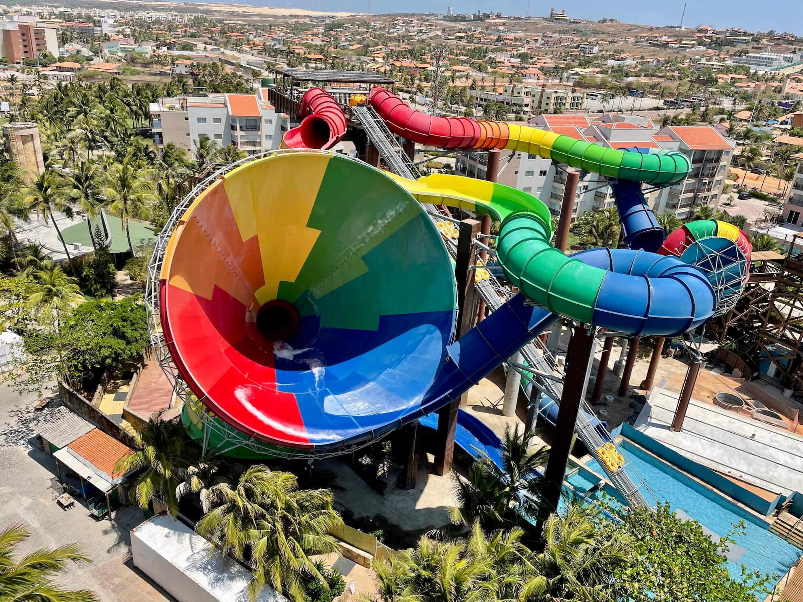

Fortaleza
Fortaleza é um município brasileiro, capital do estado do Ceará, situado na região Nordeste do país. Distante 2 285 km de Brasília, capital federal, a cidade desenvolveu-se às margens do riacho Pajeú, e sua toponímia é uma alusão ao Forte Schoonenborch, o qual deu origem ao município, construído pelos holandeses durante sua segunda permanência no local, entre 1649 e 1654. O lema de Fortaleza, presente em seu brasão, é a palavra em latim Fortitudine, que, em português, significa "por/com força, valor, coragem".
Está localizada no litoral Atlântico, a uma altitude média de dezesseis metros, com 34 km de praias. Fortaleza possui 313,140 km² de área e 2 643 247 habitantes estimados em 2018, além da maior densidade demográfica entre as capitais do país, com 8 390,76 hab/km². É a maior cidade do Ceará em população e a quinta do Brasil. A Região Metropolitana de Fortaleza é a sexta mais populosa do Brasil e a primeira do Norte e Nordeste, com 4 051 744 habitantes em 2017. É a cidade nordestina com a maior área de influência regional.
Na viagem que eu fiz, ficamos 5 dias na cidade, mais passeamos pelos arredores, como Jericoacoara e Canoa Quebrada.
Na cidade também tem um park de águas, o Beach Park.
